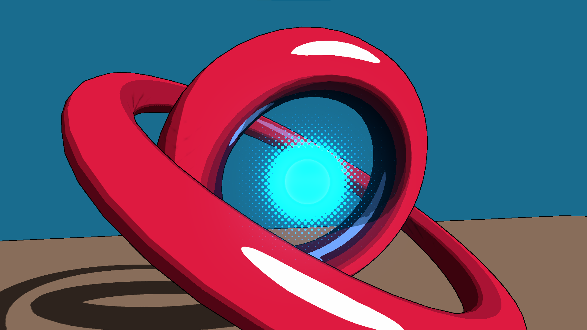
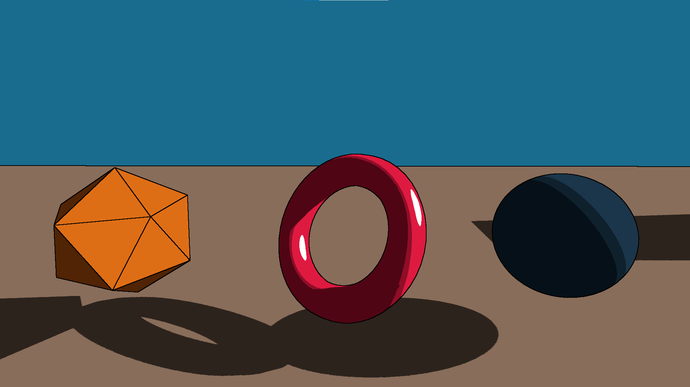
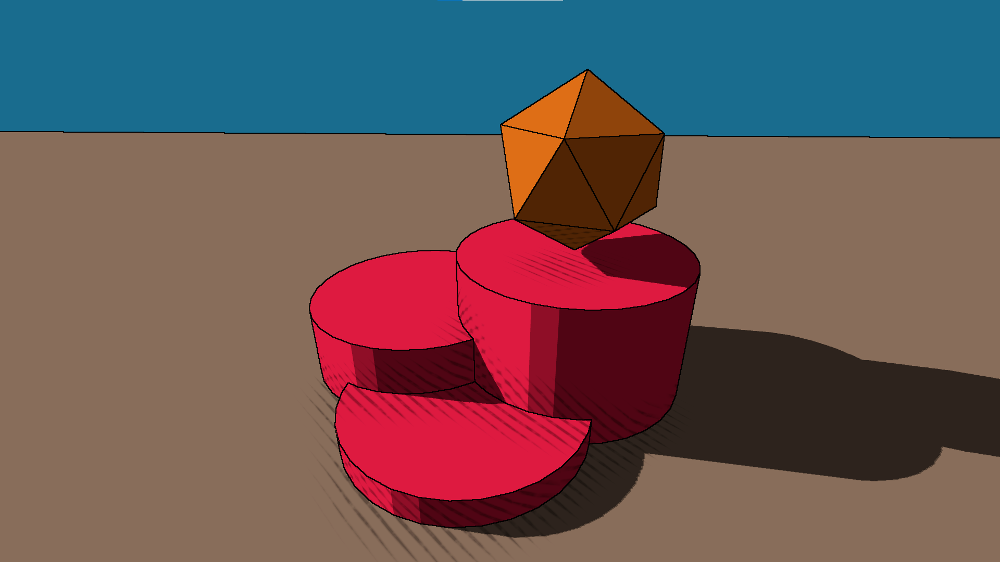
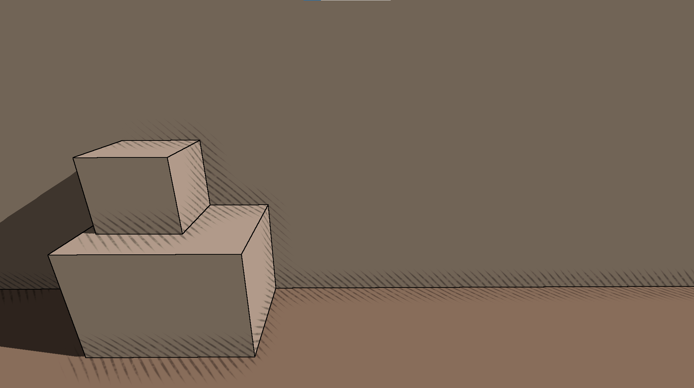
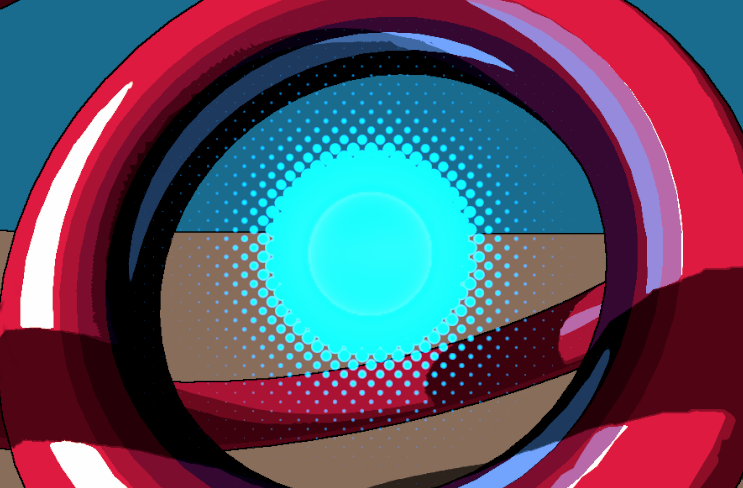

Toon Engine
I created a Toon Render Engine and submitted it to be published on the unity asset store!
Get the package (not yet released)
Features
- Toon shading with custom lighting
- Outlines
- Line hatching
- Benday-dots bloom effect
Toon shading with custom lighting
This toon shading is achieved with a ToonShader written in shadergraph and highly customizable. Objects with this shader can receive lighting which is renderer based on a Toon ramp.
Outlines
The outlines are applied as a fullscreen render feature. They are normal and depth based.
Line hatching
This line hatching style style works great for games with a comic book style like Hi-Fi Rush. It uses the unity built in ambient occlusion and is directly added inside the toon shader. The lines are procedurally generated, allowing for great customizability
Benday-dots bloom effect
This bloom effect is also procedurally generated and uses a custom render feature. It first samples the bloom from the unity bloom shader and then passes the result to a composite shader which creates the ben-day dots bloom effect.